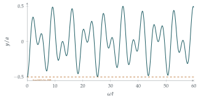

STEP III 2014、第10問
先に進む前に問題を読んでおこう。問題は STEP Support Programme の問題データベースにある： step.maths.org/questions/14-s3-q10
導入
ばねにつけた1個の質点は、単純で規則正しく上下に振動する。ところが2個の質点をばねでつなぐと、運動は複雑に見える。それぞれの質点は不規則にがたがたと動き、エネルギーは一方から他方へと行き来する。しかしその複雑さの中には、完全に単純な二つの運動が隠れている。それが基準振動（normal modes）であり、そこでは質点どうしが同じ向きに、あるいはちょうど逆向きに動き、各基準振動はそれぞれ固有の振動数（frequency）で振動する。系のあらゆる運動は、この二つの組合せである。
この問題では、3本のばねの間にある2個の質点の基準振動を求め、さらに驚くべき事実を証明する。一方の質点をずらして静止状態から動かし始めると、系は決してもとの位置に戻らないのである。その理由は、二つの振動数の比が \(\sqrt3\) であり、\(\sqrt3\) が無理数（irrational）だからである。
取りかかる前に
\(X\) が \(P\) から距離 \(a + x\) の位置にあり、\(Y\) が \(Q\) から距離 \(a + y\) の位置にあるとき、中央のばね \(XY\) の長さはいくらか。\(x\) と \(y\) が正のとき、どのばねが伸びていて、どのばねが縮んでいるか。
三つの長さの和は \(3a\) なので、\(XY = 3a - (a + x) - (a + y) = a - x - y\) である。\(x, y > 0\) のとき、外側のばねは（それぞれ \(x\) と \(y\) だけ）伸びており、中央のばねは（\(x + y\) だけ）縮んでいる。
順を追って解く
段階 1 運動方程式
\(x\) は \(P\) から \(Q\) へ向かう向きを正として測る。ばね \(PX\) の伸び（extension）は \(x\) なので、その張力（tension）\(\frac{\lambda x}{a}\) は \(X\) を \(P\) の方へ引き戻す。ばね \(XY\) の伸びは \(-(x + y)\) なので、その張力 \(-\frac{\lambda(x + y)}{a}\) は \(X\) を \(Y\) の方へ引く（負の張力は押す力を表す）。したがって、運動方程式（equation of motion）は \[m\ddot x = -\frac{\lambda x}{a} - \frac{\lambda(x + y)}{a} = -\frac{\lambda}{a}(2x + y). \qed\] 対称性により（\(X\) と \(Y\)、\(P\) と \(Q\) の役割を入れ替えて）、 \[m\ddot y = -\frac{\lambda}{a}(2y + x).\]
段階 2 分離
どちらの方程式にも \(x\) と \(y\) の両方が含まれている。二つの方程式をどのように組み合わせれば、\(x\) と \(y\) のただ一つの組合せだけを含む式が得られるか。
辺々引いたり足したりすると、 \[m(\ddot x - \ddot y) = -\frac{\lambda}{a}(x - y), \qquad m(\ddot x + \ddot y) = -\frac{3\lambda}{a}(x + y).\] いずれも単振動（simple harmonic motion）の方程式である。\(x - y\) は \(\omega^2 = \frac{\lambda}{ma}\) で、\(x + y\) は \(3\omega^2\) で振動する。
段階 3 初期条件
はじめ \(XP = a\)、\(YQ = \frac12a\) なので、\(x = 0\)、\(y = -\frac12a\) であり、両方の質点は静止している。よって \(t = 0\) において \(x - y = \frac12a\)、\(x + y = -\frac12a\) で、それらの変化率は \(0\) である。したがって \[x - y = \tfrac12a\cos\omega t, \qquad x + y = -\tfrac12a\cos\sqrt3\,\omega t.\] ゆえに \(A = \frac12a\)、\(B = 0\) である。■
段階 4 決して戻らない
\(y\) を \(t\) で表せ。\(Y\) がもとの位置に戻るには \(y = -\frac12a\) でなければならない。そのとき二つの余弦はそれぞれいくらでなければならないか。
辺々引くと、\(y = \frac12\bigl((x + y) - (x - y)\bigr) = -\frac14a\bigl(\cos\sqrt3\,\omega t + \cos\omega t\bigr)\) である。\(y = -\frac12a\) となるには \(\cos\sqrt3\,\omega t + \cos\omega t = 2\) が必要であり、各余弦は高々 \(1\) なので、どちらも \(1\) に等しくなければならない。すなわち、整数 \(k\)、\(j\) に対して \[\omega t = 2\pi k, \qquad \sqrt3\,\omega t = 2\pi j\] である。\(t > 0\) ならば \(k \geq 1\) であり、辺々割ると \(\sqrt3 = \frac jk\) となるが、\(\sqrt3\) は無理数なのでこれは不可能である。したがって \(Y\) は決してもとの位置に戻らない。■

振り返り
分離する組合せを見つける。 \(x - y\) と \(x + y\) は、それぞれ独立した方程式を満たした。
対称性がそれを示唆する。 この系は左右を入れ替えても対称なので、対称な組合せと反対称な組合せを考えるのは自然である。
無理数性は物理的な帰結をもつ。 振動数の比が無理数であるために、運動は周期的にならない。
背後にある数学
基準振動は固有ベクトルである
方程式を行列の方程式として書くと、 \[m\begin{pmatrix}\ddot x \\ \ddot y\end{pmatrix} = -\frac{\lambda}{a}\begin{pmatrix}2 & 1 \\ 1 & 2\end{pmatrix}\begin{pmatrix}x \\ y\end{pmatrix}.\] 分離する組合せは、この行列の固有ベクトル（eigenvector）である。すなわち、固有値（eigenvalue）\(1\) に対する \((1, -1)\) と、固有値 \(3\) に対する \((1, 1)\) である（第 7.2 節）。第一の基準振動では \(x = -y\) であり、二つの質点は直線上を同じ向きに動き（\(x\) と \(y\) は反対側の端から測っていることに注意）、中央のばねの長さは変わらない。第二の基準振動では \(x = y\) であり、二つの質点は逆向きに動いて中央のばねを縮めたり伸ばしたりするので、振動数が高くなる。振動数の2乗は、固有値に \(\frac{\lambda}{ma}\) を掛けたものである。
これは質点とばねが何個あっても成り立つ。\(N\) 個の連成振動子からなる系には \(N\) 個の基準振動があり、それらは対称行列の固有ベクトルで与えられる。そしてスペクトル定理（spectral theorem）により、それらは必ず存在し、互いに直交することが保証される。分子は基準振動で振動しており、化学者はそれを利用して、分子が吸収する赤外線から分子を同定する。建物や橋にも基準振動があり、技術者はそれを風や地震の振動数から遠ざけておかなければならない。さらに質点の個数を無限大にすると、基準振動は振動する弦の倍音となり、これがフーリエ解析（Fourier analysis）の出発点である。
到達はしないが近づく
\(Y\) は厳密にもとの位置に戻ることはないが、いくらでも近くまで来る。その理由はクロネッカー（Kronecker）の定理にある。\(\alpha\) が無理数ならば、倍数 \(\alpha, 2\alpha, 3\alpha, \ldots\) を \(1\) を法として考えると、それらは \([0, 1]\) のあらゆる数にいくらでも近づく。よって、\(\omega t\) が \(2\pi\) の倍数であり、かつ \(\sqrt3\,\omega t\) が \(2\pi\) の倍数と任意の許容誤差以内にあるような時刻を見つけることができる。この運動は準周期的（quasi-periodic）であり、トーラス（torus）（各基準振動に一つずつ角度をとったもの）の上を、決して閉じることなく巻きついていく。振動数の比が有理数か無理数かという同じ区別が、太陽系の安定性に関する KAM 定理の核心にある。
思考のスキル
方程式が連立している（互いに結びついている）ときは、独立に変化する変数の組合せを探せ。線形の問題では、それが固有ベクトルである。
これは第 10.6 節の重心（centre of mass）と相対座標と同じ考え方である。大学では、これは対角化（diagonalisation）となる。行列が対角行列になるような基底を選べば、連立した方程式の系は独立な方程式へとばらばらに分かれるのである。
次の一歩
エネルギー。 全エネルギー \(\frac12m(\dot x^2 + \dot y^2) + \frac{\lambda}{2a}\bigl(x^2 + y^2 + (x + y)^2\bigr)\) が一定であること、さらにそれが各基準振動に一つずつ対応する二つの項の和に分かれ、それぞれの項が個別に一定であることを示せ。
純粋な基準振動。 運動が周期 \(\frac{2\pi}{\omega}\) の周期運動になるようにするには、質点をどのように動かし始めればよいか。周期 \(\frac{2\pi}{\sqrt3\,\omega}\) の場合はどうか。
硬い中央のばね。 中央のばねの弾性率（modulus）が \(\lambda\) ではなく \(\mu\) であるとき、二つの基準振動の振動数を求めよ。\(\mu/\lambda\) がどのような値のとき、あらゆる運動が周期的になるか。
3個の質点。 等しい質量をもつ3個の質点が、二つの固定点の間で4本の同一のばねによって一直線につながれている。行列とその固有値（\(2 - \sqrt2\)、\(2\)、\(2 + \sqrt2\)）を求め、三つの基準振動を説明せよ。
さらに学ぶために
A. P. French, Vibrations and Waves（MIT Introductory Physics Series）、第5章。連成振動子と基準振動について。
Gilbert Strang, Introduction to Linear Algebra（Wellesley-Cambridge）、固有値の章。ばねと質点を主要な例として扱っている。
Steven Strogatz, Nonlinear Dynamics and Chaos（CRC Press）、第8章。トーラス上の準周期運動について。